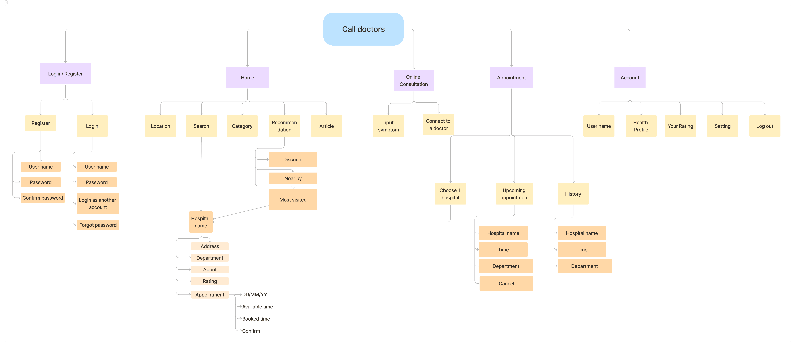

{{vm.primaryColor}}

The Problem
The process of visiting hospitals can be complex and overwhelming for patients, leading to frustration and inefficiency. This problem encompasses various challenges faced by patients from scheduling appointments to receiving medical care and follow-up
Our Solution
An app can enhance the patient experience, improve operational efficiency, and ultimately provide better healthcare outcomes.

Research
We conducted both types of research: Primary research and secondary research. Here are the results after 2 weeks of researching documents on the Internet, interviewing the target audience and sending out surveys:
- Result 1: People are not very satisfied with their medical treatment process (2125 dissatisfied reviews in the medical examination registration process)
- Result 2: People often arrive at the hospital early to wait in line and have to wait an average of 30 minutes for their turn.
- Result 3: Saving time and still having a good place to get medical care is everyone's biggest wish.
User Personas
Based on the results of the primary research, we defined 3 User Personas:


Problem Statement
1. A is a student and a person who focuses on the quality of life. Therefore, A needs a solution to help save time when going to the doctor when needed.
2. B is an office worker who often goes for regular check-ups and needs to be introduced to a reputable clinic with reasonable service prices because B has limited time and moderate finances.
3. H is a businessman with a family, so he is very busy. Therefore, he needs a solution that will help him get medical checkups and treatment quickly and be more proactive with his time. He also wants reviews that objectively evaluate hospital criteria so that he can make reasonable choices.
Value Proposition

Call Doctors has an appointment scheduling function that significantly reduces your waiting time.
Call Doctors has the function of displaying the exact and clear service prices of each medical facility, helping you make optimal financial decisions.
Users can rate and view reputable reviews from people who have used the service, thereby choosing the best quality medical facility.
User Flow

Flow of the appointment making function
Information Architecture

Wireframe
Style Guide
Color Palette
Primary Color
Shades
Tints
Neutral Color
{{vm.neutralColor}}
Shades
Font
Aa
Font
Inter
Aa
Inter
Bold
Aa
Inter
Semibold
Aa
Inter
Medium
Aa
Inter
Regular